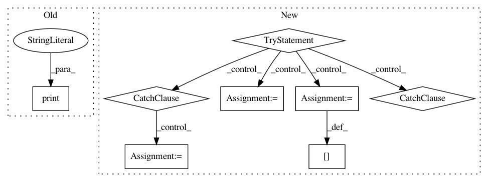

2199c616c262de892462c94517cb911facf1eeed,osmnx/pois.py,,parse_osm_relations,#Any#Any#,208
Before Change
elif relation["type"] == "multiline":
print("TODO: multiline relation")
elif relation["type"] == "multipoint":
print("TODO: multipoint relation")
// Merge "osm_way_df" and the "gdf_relations"
osm_way_df = osm_way_df.append(gdf_relations)
return osm_way_df
After Change
// Iterate over relations and extract the items
for relation in relations:
if relation["tags"]["type"] == "multipolygon":
try:
// Parse member "way" ids
member_way_ids = [member["ref"] for member in relation["members"] if member["type"] == "way"]
// Extract the ways
member_ways = osm_way_df.loc[member_way_ids]
// Extract the nodes of those ways
member_nodes = list(member_ways["nodes"].values)
try:
// Create MultiPolygon from geometries (exclude NaNs)
multipoly = MultiPolygon(list(member_ways["geometry"]))
except Exception:
multipoly = invalid_multipoly_handler(gdf=member_ways, relation=relation, way_ids=member_way_ids)
if multipoly:
// Create GeoDataFrame with the tags and the MultiPolygon and its "ways" (ids), and the "nodes" of those ways
geo = gpd.GeoDataFrame(relation["tags"], index=[relation["id"]])
// Initialize columns (needed for .loc inserts)
geo = geo.assign(geometry=None, ways=None, nodes=None, element_type=None, osmid=None)
// Add attributes
geo.loc[relation["id"], "geometry"] = multipoly
geo.loc[relation["id"], "ways"] = member_way_ids
geo.loc[relation["id"], "nodes"] = member_nodes
geo.loc[relation["id"], "element_type"] = "relation"
geo.loc[relation["id"], "osmid"] = relation["id"]
// Append to relation GeoDataFrame
gdf_relations = gdf_relations.append(geo)
// Remove such "ways" from "osm_way_df" that are part of the "relation"
osm_way_df = osm_way_df.drop(member_way_ids)
except Exception:
log("Could not handle OSM "relation": {}".format(relation["id"]))
// Merge "osm_way_df" and the "gdf_relations"
osm_way_df = osm_way_df.append(gdf_relations)
return osm_way_df
def create_poi_gdf(polygon=None, amenities=None, north=None, south=None, east=None, west=None, retain_invalid=False):
In pattern: SUPERPATTERN
Frequency: 3
Non-data size: 8
Instances
Project Name: gboeing/osmnx
Commit Name: 2199c616c262de892462c94517cb911facf1eeed
Time: 2017-12-28
Author: henrikki.tenkanen@helsinki.fi
File Name: osmnx/pois.py
Class Name:
Method Name: parse_osm_relations
Project Name: gboeing/osmnx
Commit Name: 9aef0f280be9dbb22ac407d8478376beac8f955a
Time: 2018-05-03
Author: henrikki.tenkanen@helsinki.fi
File Name: osmnx/pois.py
Class Name:
Method Name: parse_osm_relations
Project Name: nerox8664/pytorch2keras
Commit Name: 5101a0fe2a89683ea3df8cb896610aaa3da04fb1
Time: 2019-01-01
Author: nerox8664@gmail.com
File Name: pytorch2keras/converter.py
Class Name:
Method Name: pytorch_to_keras